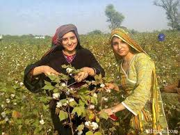
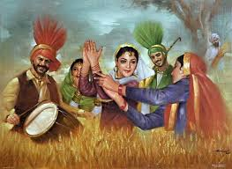
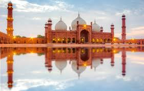
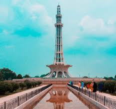

Punjabi Punjab, the most populous province of Pakistan, is known for its vibrant culture, rich history, and agricultural abundance. Its capital, Lahore, is often regarded as the cultural heart of the country, famous for its historical sites, including the Lahore Fort and Badshahi Mosque. The province is characterized by fertile land, thanks to the Indus River system, making it a major contributor to Pakistan's agricultural output, particularly in wheat, rice, and cotton. Punjab’s diverse population includes Punjabis, Sikhs, and various other ethnic groups, each contributing to the province’s colorful traditions, music, and cuisine.
The cultural landscape of Punjabi Punjab is lively and dynamic, marked by festivals such as Basant, which celebrates the arrival of spring with kite flying and vibrant festivities. The folk music and dance forms, like Bhangra and Gidda, are integral to social gatherings and celebrations. Traditional crafts, such as pottery and textiles, showcase the artistic heritage of the region. Punjab also has a rich literary tradition, with famous poets like Allama Iqbal and Bulleh Shah reflecting the province's spiritual and philosophical depth. Despite facing modern challenges, Punjabi Punjab remains a cornerstone of Pakistan’s identity, blending its historical roots with contemporary developments.In addition to its cultural richness, Punjabi Punjab plays a crucial role in Pakistan's economy, contributing significantly to industrial output and trade. Cities like Faisalabad and Sialkot are known for their textile and sports goods industries, respectively. The province is also home to some of the country's major universities, fostering education and research. Punjab’s cuisine is renowned for its flavors and variety, featuring dishes like biryani, nihari, and various types of bread, such as naan and paratha. The province’s warm hospitality is reflected in its communal dining traditions, where family and friends gather to share meals. Moreover, Punjab’s historical significance is highlighted by its many forts and palaces, remnants of its storied past under various empires, including the Mughals. This blend of tradition, economic vitality, and cultural richness makes Punjabi Punjab a vital part of Pakistan’s national identity.
|  |  |  |  |
|---|